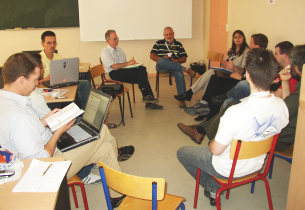

OpenOffice.org -
horumah dari aplikasi perkantoran open-source berskala dunia
Kenapa OpenOffice.org

 Dapatkan OpenOffice.org 3 sekarang
Dapatkan OpenOffice.org 3 sekarang
Perangkat Lunak Bebas/Open-Source
Pendukung (F/OSS) berpaling ke OpenOffice.org 3 baik sebagai pemakai dan juga kontributor. Dengan pengolah kata fleksibel, spreadsheet handal, grafis dinamis, akses basis data dan masih banyak lagi, OpenOffice.org 3 adalah aplikasi perkantoran pilihan jutaan pengguna.
OpenOffice.org 3 dirilis dibawah aturan LGPL yang disetujui OSI, dengan lebih dari 750 kontributor dan komunitas internasional yang mendekati 400.000 individu.
OpenOffice.org 3 dirilis dibawah aturan LGPL yang disetujui OSI, dengan lebih dari 750 kontributor dan komunitas internasional yang mendekati 400.000 individu.


Perangkat lunak untuk semua
OpenOffice.org 3 adalah aplikasi desktop yang wajib dimiliki yang digunakan oleh jutaan orang - sebuah perangkat open-source yang akan dihargai oleh keluarga, teman, dan tetangga Anda. Dengan lisensi perangkat lunak bebas dan Native Language Confederation yang aktif, OpenOffice.org adalah pemain kunci dalam usahanya untuk is a key player in the drive to menghapus penghambatan digital dan mempertahankan bahasa minoritas yang diancam karena berada pada sisi yang salah dalam pemisahan digital. Untuk puluhan ribu pengguna, hal ini membawa komunitas OpenOffice.org sebagai kemungkinan pilihan untuk sukarelawan.
Terbuka untuk pengembangan
OpenOffice.org 3 adalah produk perangkat lunak yang matang, merepresentasikan lebih dari dua puluh tahun pengembangan yang berkelanjutan. Aplikasi ini tersedia dalam beberapa sistem operasi. Memahami dan berkontribusi pada pengembangan intinya membutuhkan komitmen yang serius dan kemampuan rekayasa perangkat lunak - bukan untuk yang lemah jantung. Namun, seperti semua proyek open-source yang sukses, OpenOffice.org memiliki komunitas pengembang yang aktif, yang bersedia membantu pendatang baru. Alternatif lain, cobalah mengunjungi ekstensi, atau menggunakan komponen berbasis UNO milik OpenOffice.org pada aplikasi lain.
Dunia terbuka
Jika Anda menggunakan OpenOffice.org 3, Anda akan menghargai usaha yang telah dilakukan untuk menyediakan perangkat lunak ini kepada Anda untuk bebas digunakan. Bantu kami untuk memastikan pengguna di masa depan dapat menggunakannya secara bebas. Komunitas OpenOffice.org mengundang kontributor: Apapun yang Anda bisa, lakukan untuk OpenOffice.org. Begitu juga dengan pengembang, Komunitas mengundang penterjemah, artis, penulis teknis, penguji, orang-orang yang menawarkan dukungan pengguna, orang-orang bagian penjualan dan pemasaran, penglobby, donor, ... daftarnya cukup panjang. Komunitas beroperasi secara internasional pada semua zona waktu, dihubungkan oleh Internet. Bicaralah kepada kami hari ini.
Oracle dan Java adalah merek dagang dari Oracle dan/atau affiliasinya. Nama lainnya mungkin merek dagang dari pemilik masing-masing.